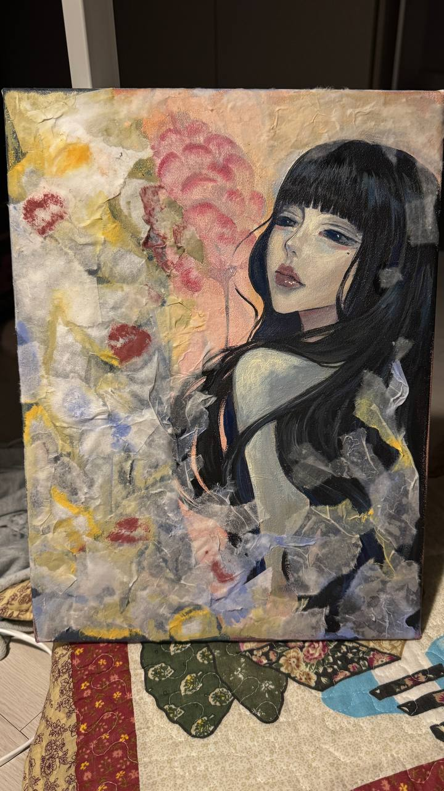
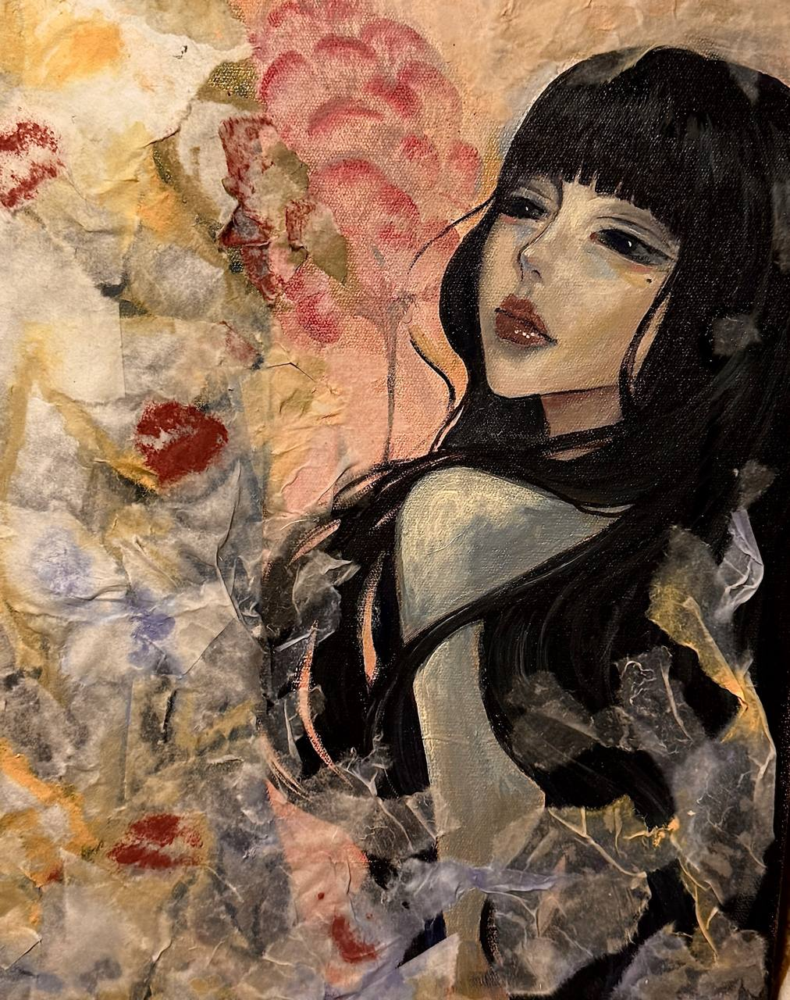
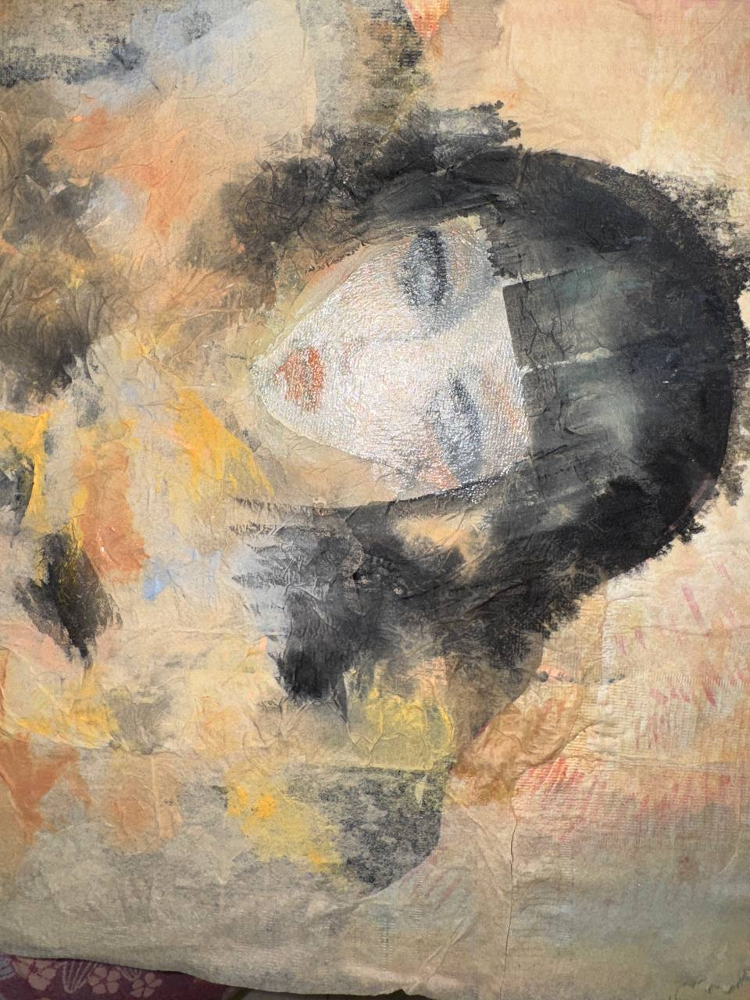
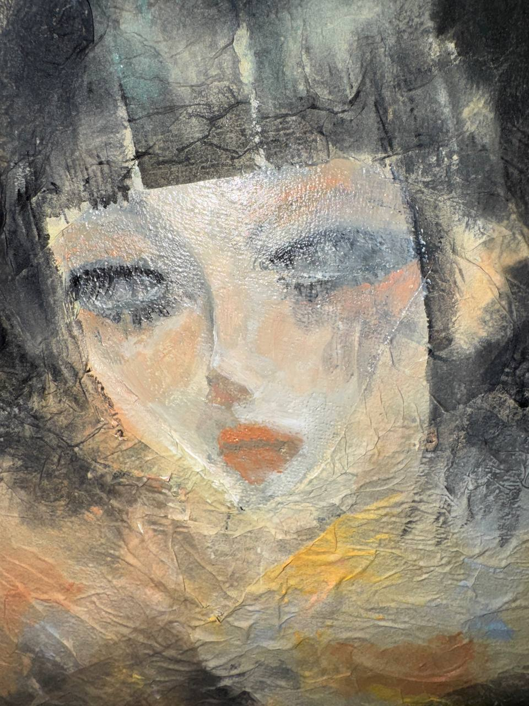
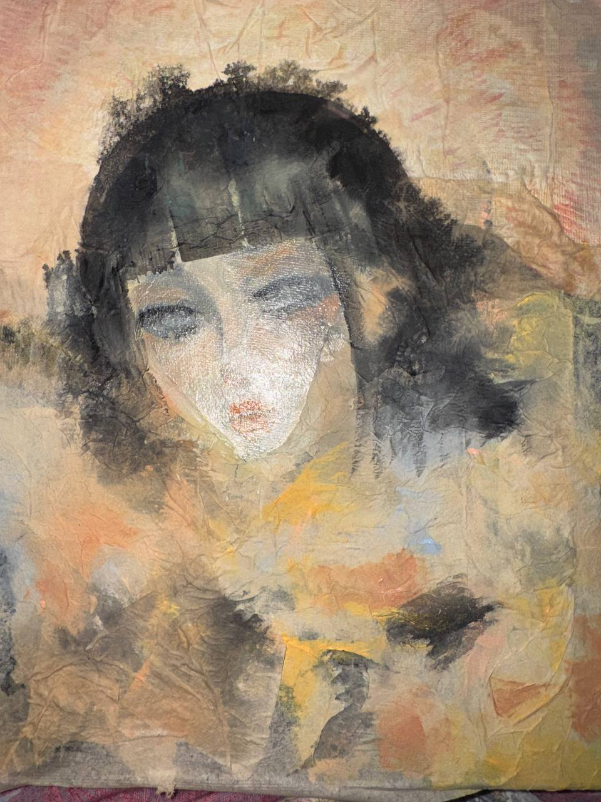
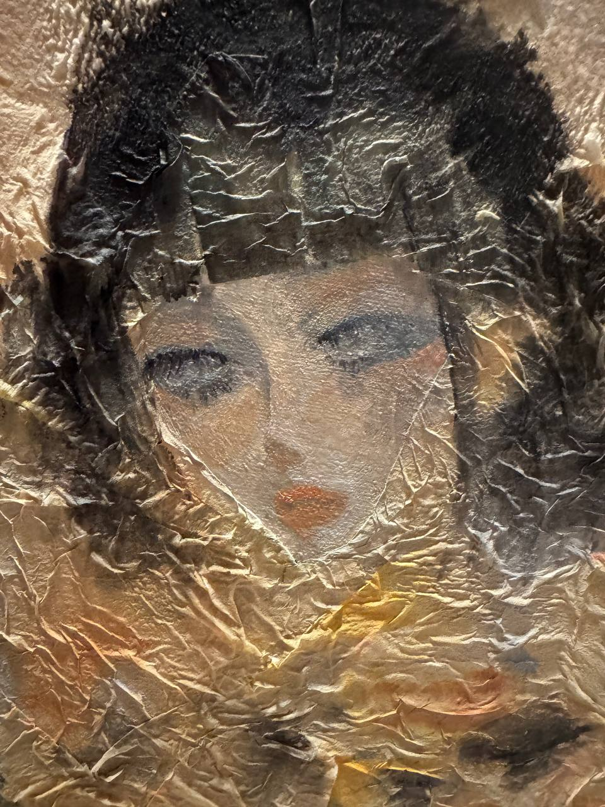
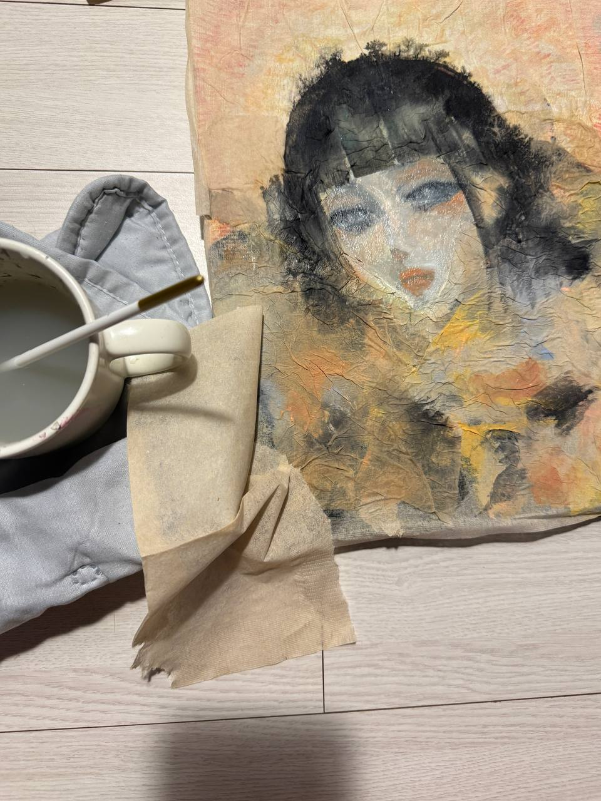
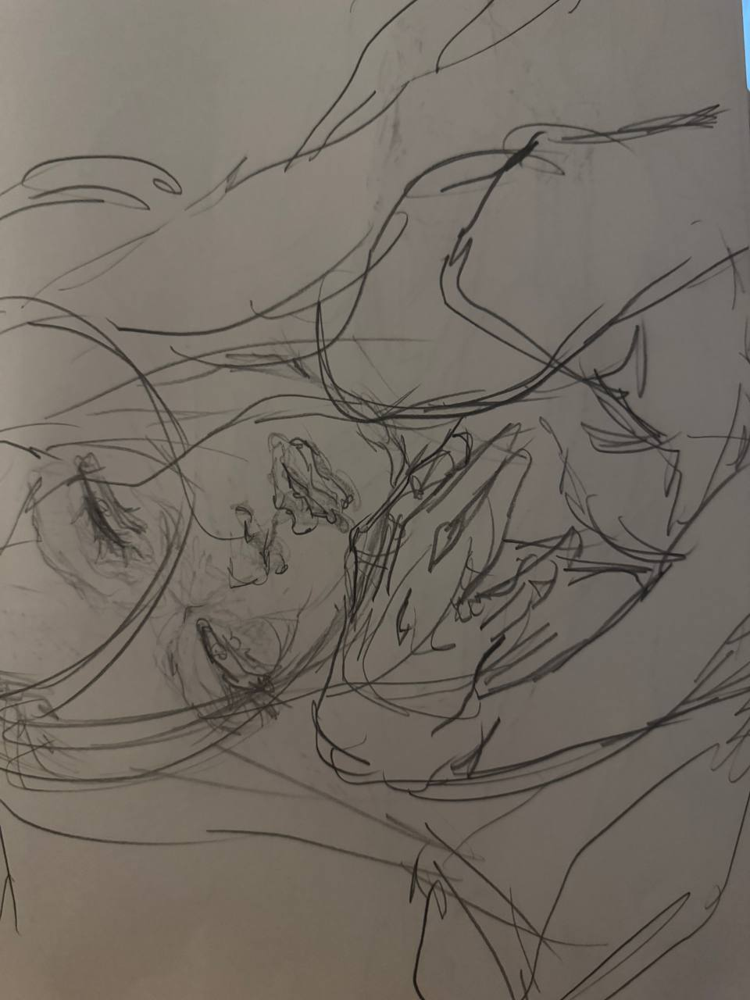
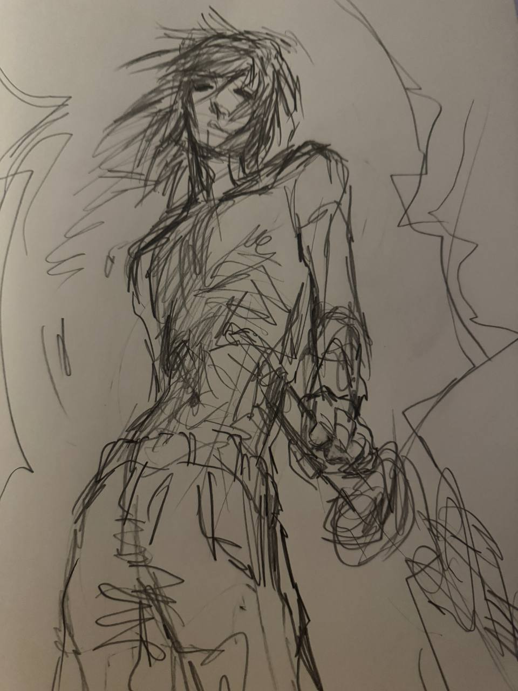
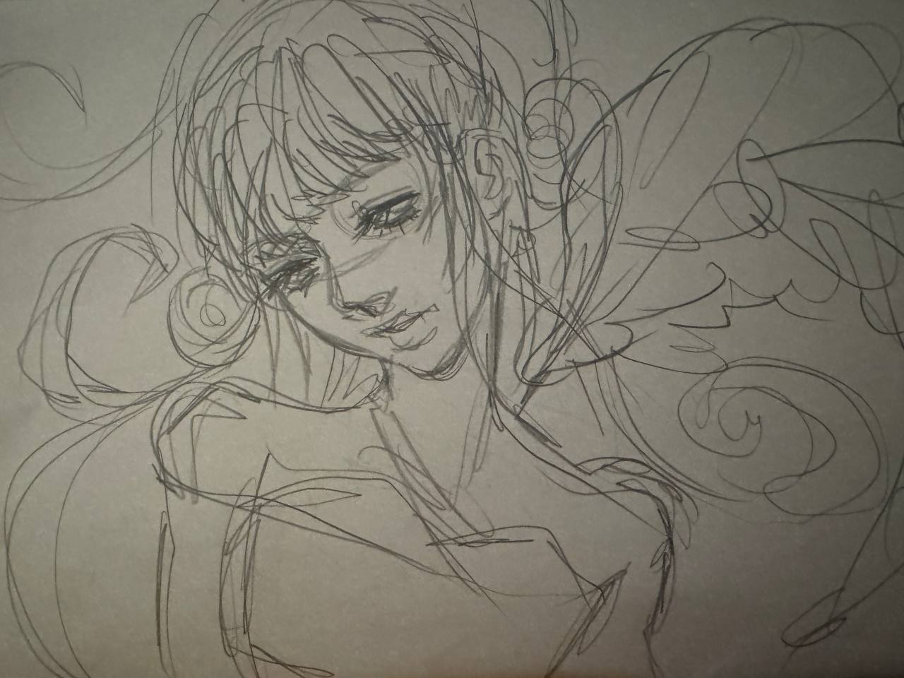

TRADITIONAL ART
My traditional practice is driven by experimentation, material and emotion. I am interested in allowing materials to behave unpredictably — combining acrylic paint with paper, hanji, tissue, water and layered textures directly on canvas.
Rather than controlling every element, I use these interactions to explore color, surface and emotional expression.
HANJI / ACRYLIC / CANVAS
A portrait-based mixed-media experiment combining acrylic painting with wet hanji applied directly onto canvas. The work explores the tension between controlled portraiture and the unpredictable behavior of wet material, texture and color.


TISSUE / LIQUID COLOR / CANVAS
An experimental surface study using ordinary tissue paper, liquid paints and layered color. I was interested in how inexpensive everyday material could transform into an expressive texture through saturation, tearing, folding and pigment.





DRAWING AS MOVEMENT
My sketches are built through quick, airy and dynamic lines. Rather than searching for perfect contours, I use gesture, rhythm and movement to capture emotion, tension and energy.


